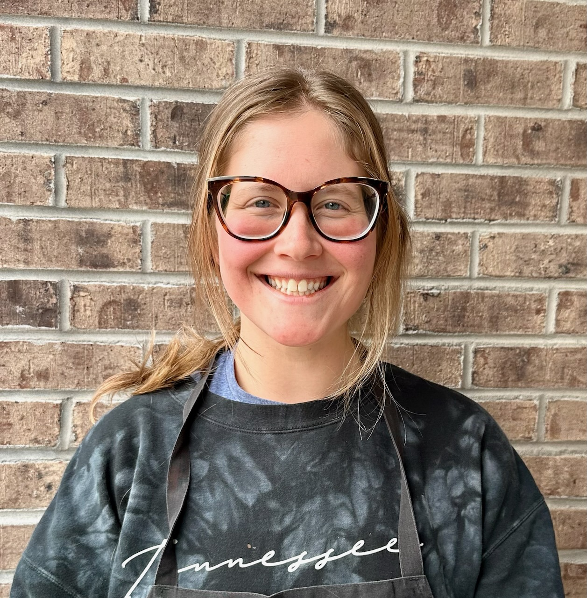
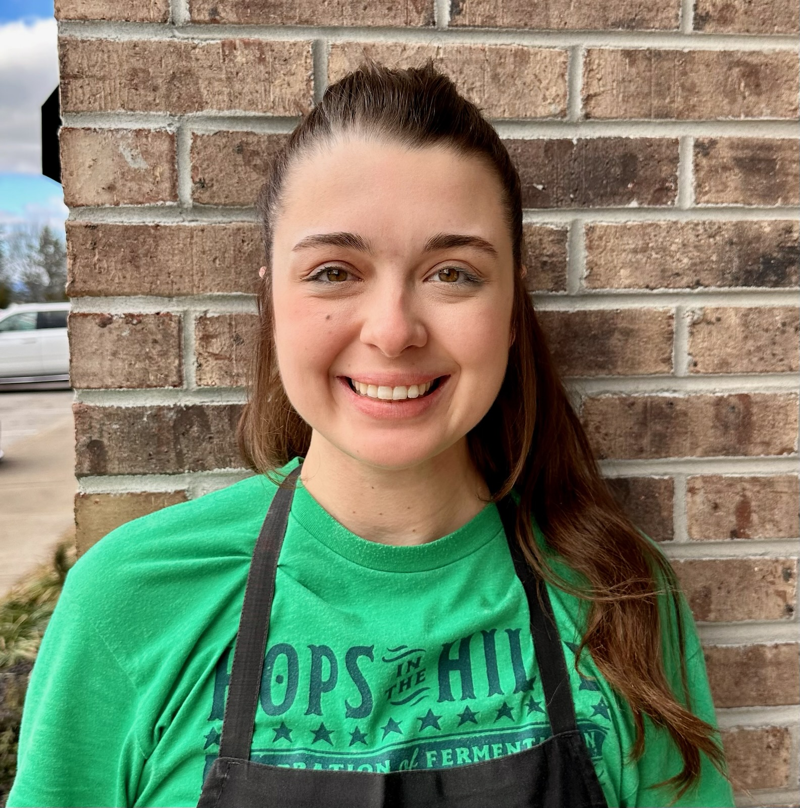

Our Stories
Learn about the lovely chefs that create all of our wonderful treats.
|
Darien Clure, founder and head chef, fell in love with baking at a young age. Her father would always make time to make her a birthday cake despite his very busy work life. Darien has over a decade of experience working with food and hungry customers. This bakery is her effort to share those feelings and help create new memories with our community. |
 |
|
Aaron Clure, was our first employee. He worked with us when we were still in a home kitchen. Aaron boasts nearly 15 years of experience in the food industry. His journey though his career has taken him from pizza delivery to bartender to luxury resort line cook. His operations expertise aided our growth considerably. |
|
Kristin M is our general manager.
She has nearly a decade of experience in the service industry gathering extensive knowledge in both front and back of house. Kristin is an expert in all things food service. |
 |